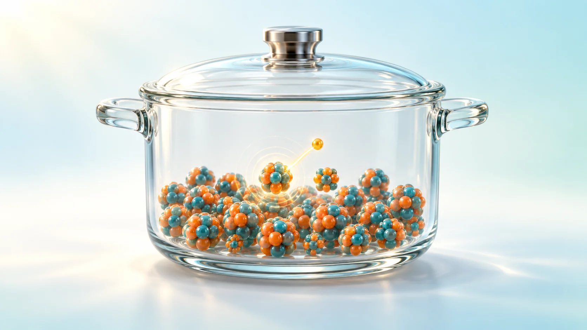
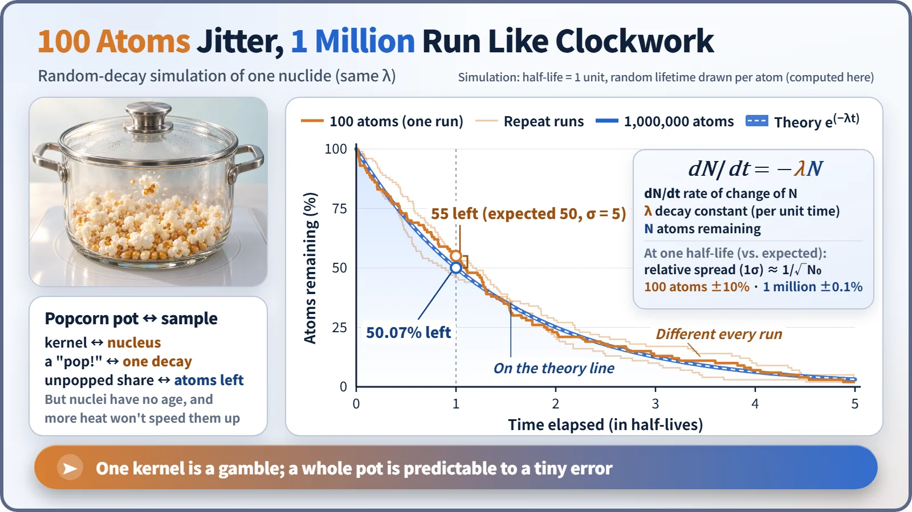
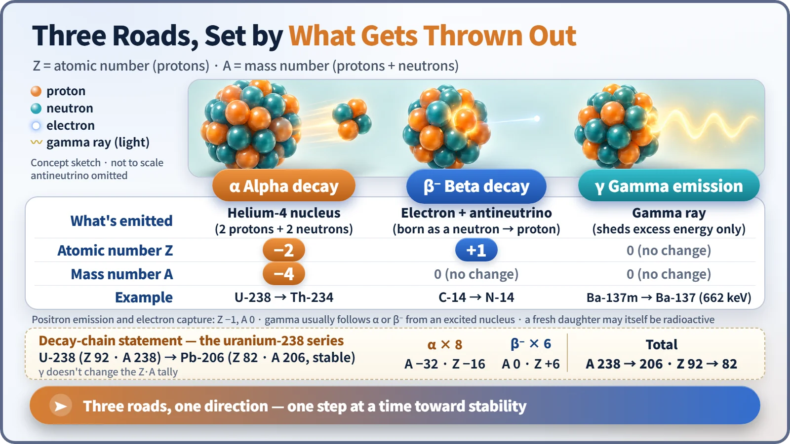

Nuclear & Radiation Basics · 011
What a Popcorn Pot Teaches About Nuclei — Radioactive Decay Explained
One nucleus is unpredictable and has no age, but billions of them follow the decay law with ruler-like precision.

Radioactive decay is an unstable nucleus spontaneously giving off a particle or energy and turning into a more stable nucleus. No one can predict when one nucleus will decay, and nuclei have no age, but a large population shrinks with remarkable precision following dN/dt = −λN, and heat, pressure or chemistry essentially cannot change the rate. [1]
Pop! Who goes next?
Heat a pot of corn kernels and soon they start popping all over. Could you predict exactly when one particular kernel will burst? Nobody can. Yet "after about two minutes, nearly all of them will have popped" is a prediction that works rather well. You can't know about one, but you can know about the whole pot. That is the character of radioactive decay.
An unstable nucleus putting down its load
A nucleus whose balance of protons and neutrons is off can't stay as it is. It sends out a particle or some energy and changes into a more stable state. That is radioactive decay, and what flies out is radiation. The nucleus before decay is the parent nuclide; the one formed afterward is the daughter nuclide.
"Decay" doesn't mean the atom vanishes: it transforms into a different nucleus. Rutherford and Soddy showed this in 1902. Elements turning into other elements on their own, the alchemists' dream, happens in nature every day, without anyone touching it: in uranium in the ground and in the potassium in your body. [2]
Nuclei have no age
Which nucleus decays, and when, can't be known even in principle. That's not a limit of our instruments; nature works by probability. And nuclei have no age: a uranium nucleus that has lasted a billion years is no more likely to decay in the next second than a newborn one. This probability of decay per unit time is the decay constant, λ (lambda), a fixed value for each nuclide.
Because the probability is fixed, many atoms together can be calculated: dN/dt = −λN, where N is the number of atoms left and dN/dt how many disappear per second. The chance that one uranium-238 nucleus decays within a year is only about 1.5 in 10 billion, but one gram holds about 2.5×1021 atoms, so about 12,000 decays happen every second, a steady and precise flow. [3]

With 100 atoms, the count left jumps around like a ragged staircase, about ±10%. With a million, the fluctuation shrinks to about ±0.1% and the curve is smooth. Real samples usually hold more than 1020 atoms, so the result is as exact as a ruler. The half-life, the time for the amount to fall by half, comes out of these same statistics.
A pot where turning up the heat doesn't help
The popcorn analogy breaks down here. Popcorn pops faster with more heat, and kernels heated longer are more likely to pop. Nuclei do neither. Decay rates are essentially unaffected by temperature, pressure or chemical bonds, because nuclear energies are hundreds of thousands to millions of times larger than chemical-bond energies. Boiled or frozen, metal or oxide, λ stays the same; only a special electron-capture decay has been measured to shift, by less than 1%. So "burning or chemically treating it removes radioactivity" is wrong: you can change where it is and what form it takes, but not the decay clock. [4]
What gets thrown out: three roads

| Type | What leaves | Z change | A change | Example |
|---|---|---|---|---|
| Alpha (α) | helium-4 nucleus (2 protons + 2 neutrons) | −2 | −4 | U-238 → Th-234 |
| Beta (β⁻) | electron + antineutrino, created as a neutron becomes a proton | +1 | 0 | C-14 → N-14 |
| Gamma (γ) | gamma ray (leftover energy only) | 0 | 0 | Ba-137m → Ba-137 (662 keV) |
The beta electron wasn't sitting in the nucleus beforehand; it is created at that instant. And if the daughter is also unstable, it decays again. Uranium-238 goes through 8 alpha and 6 beta decays before reaching stable lead-206: a decay chain. The mass number falls by 32 (8 alphas × 4), and the atomic number by 10 (16 lost to alpha, 6 gained from beta). [2]
Why this matters in nuclear power
When a reactor shuts down, fission stops, but the accumulated fission products keep decaying and producing decay heat, starting at a few percent of operating power and slowly declining. That is why a reactor must keep being cooled after it stops; knowing this unchangeable rate and designing for it is where safety begins. Spent-fuel management, carbon-14 dating and medical radioisotopes all rely on the same fact: decay rates are constant and predictable. [1]
Key takeaways
Radioactive decay turns an unstable nucleus into a more stable one by emitting a particle or energy. A single nucleus is unpredictable and ageless, but a large population follows dN/dt = −λN with astonishing precision, and no amount of heat speeds it up. That stubborn clock lets us calculate a reactor's heat and date artifacts tens of thousands of years old.